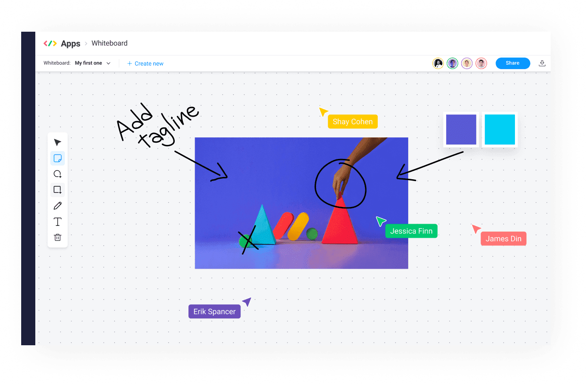

SHORT ON TIME? HERE’S A QUICK SUMMARY
Monday.com's CRM platform offers a comprehensive solution for managing your work in one place, including gaining visibility into your sales pipeline and customizing workflows to fit your sales cycle. With features like customizable boards and analytics dashboards, Monday.com is a top choice for those seeking a comprehensive CRM system. In this review, we'll explore Monday.com's CRM features, interface, dashboards, and safety measures, as well as provide feedback from other users. Additionally, you can test the platform for free for 14 days by clicking the link above to see if it meets the unique needs of your organization.
Monday.com's CRM platform offers a comprehensive solution for managing your work in one place, including gaining visibility into your sales pipeline and customizing workflows to fit your sales cycle. With features like customizable boards and analytics dashboards, Monday.com is a top choice for those seeking a comprehensive CRM system. In this review, we'll explore Monday.com's CRM features, interface, dashboards, and safety measures, as well as provide feedback from other users. Additionally, you can test the platform for free for 14 days by clicking the link above to see if it meets the unique needs of your organization.
👍 PROS:
- Trusted by 180,000+ customers worldwide
- High degree of customization
- Huge template library covering different sectors and industries
- User-friendly interface - requires little to no training and onboarding
- Visually interactive
- Excellent collaboration features
- Strong API and extensive library of integrations
- End-to-end sales platform
- Customizable dashboards
- Great automation features
- Fully HIPAA compliant
- Easy to import contacts
- Nested boards and mirrored columns
- Comprehensive knowledge base with live webinars and video tutorials
- 24/7 customer support
👎 CONS:
- Some features are less intuitive than others
- Too many features that it can get confusing at times
Get monday sales CRM - Streamline Your Sales Process!
SEE WHAT USERS HAVE TO SAY
Trustpilot Rating: 4.1 out of 5 from 3,001 reviews
"I was looking for a fully flexible interface where we can manage all our different brands: B2B and D2C. The self-learning sessions and tutorials were very helpful so that even non tech-savvy users could easily manage everything within just a few clicks. It was a big step in terms of marketing and sales automation. The staff was very helpful, patient and a great strategic sparring partner. With the usage of Monday, we were able to build a strong base so that we can now create scalable results."
"I love the flexibility and simplicity of this app. It can be adapted for anything ranging from simple to-do lists, CRM and leads management to fully-fledged projects. With Monday, our team is in the loop with just the right amount of information, giving members a convenient way to collaborate and inform each other when tasks are finished or need additional support. And I think we are just scratching the surface because there seems to be a lot more to discover."
"I was so unorganized with clients and internal projects. Someone encouraged me to find a CRM. So I looked around and tried a few trials of different software. The most efficient one I found was Monday.com, and I will continue to learn and grow with it! it's made my life so much easier and the headaches have gone down tremendously."
WHO SHOULD USE MONDAY.COM?
Anyone who needs to manage their customer relationships and sales pipeline can use Monday.com as a CRM tool. Whether you're a small business owner, a sales representative, or part of a larger team, Monday.com can provide a centralized location for managing your sales leads, deals, and customer interactions. Because Monday.com is fully customizable, it can be tailored to fit the specific needs of different businesses and teams.
WHAT ARE THE FEATURES?
Monday.com CRM offers a variety of features that can increase the effectiveness and productivity of your sales team. Here are some of them:
Dashboards
With Monday.com's CRM dashboard, you can manage your customer relationships effectively by customizing the dashboard to fit your specific needs. Whether you create your own dashboard or use pre-built templates, you'll have access to charts, graphs, and tables to help you visualize your data. You can even integrate other tools like social media platforms and customer service software to streamline your workflow. Collaboration within the platform is easy, so you can track progress, share insights, and collaborate on tasks with your team. The dashboard can also perform tasks like sending email notifications, updating customer records, and scheduling follow-up tasks, all automatically. Overall, Monday.com's CRM dashboard provides a comprehensive solution for managing your customer relationships, including tracking sales leads and monitoring customer support tickets.
Activity Management
The Monday.com CRM activity management feature is designed to help you keep track of all your customer interactions and follow-up tasks in one place. With this feature, you can stay on top of your sales pipeline and ensure that no potential deals slip through the cracks. Here are some of the key features of Monday.com's CRM activity management:
Centralized view of customer interactions: You can see a complete history of all your customer interactions, including emails, phone calls, and meetings, in one place. This makes it easy to track the status of each interaction and follow up on any outstanding tasks.
Customizable activity types: You can create custom activity types to track different types of customer interactions, such as "demo scheduled" or "follow-up call." This makes it easy to categorize and filter activities based on their status and priority.
Automatic activity creation: Monday.com can automatically create activities based on triggers, such as a new lead being added to the system or a deal moving to a new stage in the sales pipeline. This saves you time and ensures that no potential opportunities are missed.
Activity notifications: You can receive notifications when new activities are created or when existing activities are updated. This helps to ensure that everyone on the team is aware of important customer interactions and can take appropriate action.
Integration with other tools: Monday.com integrates with a variety of other tools, such as email and calendar apps, to automatically pull in customer interactions and create activities based on triggers.
Sales Forecasting
Monday.com's CRM sales forecasting feature is designed to help you and your team forecast and track your sales revenue over time. With this feature, you can create forecasts based on historical sales data, pipeline opportunities, and other relevant factors, and track your progress towards your sales targets in real-time.
The CRM sales forecasting feature allows you to create customizable sales forecasts based on your unique sales cycles and business goals. You can also update your forecasts as new sales opportunities arise or market conditions change, ensuring that your forecasts are always up-to-date and accurate.
Another benefit of this feature is that it also allows you to track your progress towards your sales targets in real-time. This can help you stay focused and motivated, and make adjustments to your sales strategies as needed to achieve your goals.
Lastly, this feature integrates with other tools, such as CRM systems and sales pipelines, enabling you to capture and analyze data from multiple sources and provide a more complete view of your sales performance.
Lead Capturing
With this feature, you can get leads from many different places and track their progress through the sales funnel, from the first contact to the sale. This also lets you get leads from web forms, social media, and email campaigns, among other places. You can change your lead capture forms to collect specific information about each lead, such as their contact information and product interests.
It also makes it possible for you to manage leads effectively throughout the sales process. You can track leads' progress through the sales funnel, assign them to specific team members, and set reminders to follow up with leads at predetermined intervals.
Additionally, it integrates with other tools, including platforms for marketing automation and CRM systems. You can collect and analyze data from various sources thanks to this integration, giving you a more comprehensive picture of your lead generation and conversion efforts.
Team Goals
This feature lets you set and monitor goals related to your customer relationship management initiatives. You can set goals for the team as a whole or for specific team members, whether your aim is to increase sales leads, enhance customer satisfaction ratings, or speed up customer response times. Visual indicators, such as progress bars and color-coded status updates, can assist you in monitoring your progress over time.
By utilizing this tool, you will not only have a well-defined roadmap towards achieving your goals, but you will also be able to track your progress and make necessary adjustments along the way. This will enable you to understand how your efforts fit into the bigger picture of team success, which can help keep you motivated and engaged. Additionally, you will receive timely reminders and notifications to keep you on schedule and prevent falling behind.
Budget Tracking
You can utilize Monday.com's budget tracking feature to manage your CRM budgets right within the platform. This tool is especially beneficial for sales teams that need to keep track of their expenses and revenue. With this feature, you can set budgets for specific projects or campaigns, assign team members to specific tasks, and monitor spending in real-time.
The budget status is represented visually on the platform, showing you the total spend, remaining budget, and percentage completed. You can also create custom fields to monitor additional data points, such as invoice numbers or vendor information, which can help generate reports to give you insights into your spending patterns and suggest areas where you can reduce costs.
In addition, the budget tracking feature can be integrated with other tools and platforms, like accounting software and payment processing systems. This integration streamlines financial management processes and automates the transfer of data between systems, reducing the probability of errors and enhancing efficiency.
Overall, Monday.com's budget tracking feature in the CRM module is a robust tool that can aid you in managing your budgets more efficiently and effectively.
Email Sync
The email sync feature in Monday.com CRM enables a complete synchronization of your Gmail/Outlook accounts, allowing you to send and receive emails directly from the app. It also logs all your sent and received emails to their respective boards, saving time and ensuring that all client communications are tracked and centrally organized.
You and your team will know exactly what's been sent or received, when it was sent or received, and who it was received from. This helps you stay informed, efficient, and aligned with your team. It also simplifies relationship management, facilitates deal follow-ups, and enhances customer service. In addition, this feature lets you customize your email templates and set up automated email campaigns to save even more time and stay engaged with your clients.
Dependencies
Tasks are often passed from one team member to the next to finish a project, just like in a relay race. Unlike in a relay race, however, some project tasks can't begin until other tasks have been done. This link between two tasks is called a "dependency."
To set up dependencies, you can simply go to the item that you want to create a dependency for, click on the dependencies column, and select the item that the current item is dependent on. You can also set the type of dependency (such as "Finish to Start", "Start to Start", "Finish to Finish", or "Start to Finish") and add any relevant notes or information.
Once you have set up your dependencies, you can view them on your board in several different ways, such as by using the Gantt view or by using the Timeline view. This allows you to see how different tasks are related and how they impact each other's timelines.
The dependencies feature can be very useful for project management, as it helps ensure that tasks are completed in the correct order and can prevent delays or errors. It can also help you manage and prioritize your workload more effectively, by showing you which tasks are dependent on others and which ones can be started independently.
Merge Duplicate Data
The merge duplicate data feature in Monday.com is a powerful tool that can help you consolidate and clean up your CRM data by merging duplicate entries into a single, unified record. When working with a CRM system, it's common to have duplicate entries, such as multiple contacts or leads for the same customer, and this can lead to confusion and inefficiency in the sales process. With the merge feature, duplicates can be automatically detected based on predefined criteria, such as email address or name, and you can choose to merge all the data from both duplicate entries or select specific fields to merge.
If you come across duplicates with conflicting data, such as different phone numbers or job titles, you can choose which data to keep or merge. You can also customize the criteria used to detect duplicates by adding additional fields or adjusting the sensitivity of the matching algorithm. Additionally, Monday.com keeps a record of all merge actions, including who performed the merge and when, to provide an audit trail for future reference. By using Monday.com's merge feature, you can maintain a clean and efficient CRM system by consolidating duplicate data entries into a single, unified record.
Data Import
If you're looking to import your existing customer data into Monday.com CRM, you'll be happy to know that the data import feature makes it quick and easy to do so. This is especially useful if you're switching from a different CRM or if you have a large amount of customer data that needs to be migrated.
Here's how this feature assists with data import:
The import wizard guides you through the process step-by-step, making it easy to get started.
You can map your existing data fields to the corresponding fields in Monday.com CRM, ensuring that your data is correctly formatted and consistent with the rest of your CRM system.
Before finalizing the import, you can preview the data to ensure that it has been correctly mapped and formatted. This helps to prevent errors and ensure the accuracy of the imported data.
Monday.com CRM supports a variety of file formats for data import, including CSV, Excel, and Google Sheets. This makes it easy to import data from a wide range of sources.
Automatic data validation helps to ensure the accuracy and completeness of the imported data, checking for formatting errors and inconsistencies.
Overall, Monday.com CRM's data import feature helps you to streamline the process of importing data and ensures that your CRM system is accurate and consistent.
IS IT EASY TO USE?
Definitely! Monday.com has earned a reputation for being an intuitive and user-friendly platform, even for those who lack familiarity with CRM or project management software. The platform boasts a sleek and modern interface that is easy to navigate. Additionally, it lets you customize your boards and workflows to suit your unique needs and preferences for an improved experience.
Other than its customizable boards, we find using Monday.com CRM a breeze for the following reasons:
Drag-and-Drop Interface: You can use Monday.com's drag-and-drop interface to move tasks and projects between boards, update statuses, and collaborate with team members in real-time.
Simple Workflow Management: Monday.com offers automation features that make it easy to set up automated workflows and notifications based on predefined triggers. With this feature, you can save time and reduce errors by automating repetitive tasks.
Team Collaboration: Monday.com makes it easy for teams to collaborate through its various features, such as real-time updates, status labels, and dependency relationships.
Interactive Brainstorming: Monday.com provides an interactive whiteboard for brainstorming, which allows users to evaluate ideas with Kanban boards.
USER INTERFACE
The brand-new CRM from Monday is awesome. After you sign up, you are presented with a squeaky-clean user interface comprised of dashboards and various ways of viewing and assembling data. The colors are both refreshing and context-appropriate. As you work with each lead, you will notice a tiny green "progress" bar next to it, indicating how far along in the sales pipeline it is. CRM on Monday's template is built around three layers of management: Contacts (the data layer), Sales Pipeline (the visual layer), and Sales Dashboard (the reporting hub).
When you use the CRM, you can easily access dashboards, personalization, and visualization tools from anywhere. The sales dashboard is one of the best and most fun parts of the CRM. It works as a project management board with widgets that you can change to help you understand the data on your platform better. These widgets can be rich text, infographics, charts, graphs, formulas (like forecasted revenue), videos, and more. The sales dashboard is already set up to show you what's going on in the CRM platform and how to use both the CRM and the sales dashboard. Overall, the interface is made to make it as easy and quick as possible to manage customer relationships and sales activities.
DESKTOP AND MOBILE APPS
In today's world, professionals need to be able to access their work tools and software from anywhere. Monday.com recognizes this need and provides mobile apps for both Apple iOS and Android smartphones and tablets. These apps have a responsive design that responds to different screen sizes and orientations. With the Monday.com mobile apps, it's easy to collaborate with your team, share and edit files, and manage project workbooks on-the-go. The mobile apps also work offline and all updates are made in real-time. Monday.com's mobile app has received high scores in multiple reviews. As for the desktop app, it can be easily downloaded from the Monday.com website and supports both Windows and Mac. It provides a native and optimized experience on desktop devices with all the features available on the web version of the platform.
IS IT SAFE AND SECURE?
Monday.com places great importance on security and privacy and has taken several steps to ensure that the platform is secure. These measures include robust data encryption using SSL/TLS and AES-256 encryption, granular access controls that allow administrators to set permissions for users and groups, and two-factor authentication which adds an extra layer of security to user accounts. Regular security audits and compliance with industry standards such as GDPR, HIPAA, and SOC 2 Type 2 also ensure that the platform remains secure. Additionally, Monday.com has a disaster recovery plan in place, which includes backups and redundancies, to ensure data is not lost in the event of a disaster or outage. Overall, Monday.com's commitment to security and privacy is evident from the measures in place to protect user data.
HOW MUCH IS IT?
Monday CRM offers four pricing plans: Basic, Standard, Pro, and Enterprise. Here are some of the key features and pricing details for each plan:
Basic CRM
This plan costs $30 per month for three users. Features include the following:
• Unlimited customizable pipelines
• Unlimited contacts
• Unlimited boards
• Templates for lead, contact, and deal management
• iOS & Android apps
• Unlimited free viewers
• Create a dashboard based on 1 board
Standard CRM
This plan costs $42 per month for three users. All of the Basic features are included, as well as the following:
• Advanced account, contact, and deal management
• 2-way email integration with Gmail and Outlook
• Activity management
• Quotes and invoices
• Merge duplicate data
• Custom CRM automation (250 actions per month)
• Custom CRM integrations (250 actions per month)
• Create a dashboard that combines 5 boards
Pro CRM
The Pro plan for three users starts at $72 per month. Features include all Standard features in addition to:
• Sales forecasting
• Email templates with custom parameters
• Email tracking and automation
• Google Calendar sync
• Sales analytics
• Customizable email signatures
• Custom CRM automation (25,000 actions per month)
• Custom CRM integrations (25,000 actions per month)
• Create a dashboard that combines 10 boards
Enterprise CRM
The cost of this plan is determined by your organization's requirements. All Pro features are included, as well as:
• Lead scoring
• Team goals
• Advanced analytics (dashboards up to 50 boards)
• Account management
• Documents for sales
• Enterprise-scale automation and integrations
• Enterprise-grade security & governance
• Multi-level permissions
• HIPAA Compliance
IS THERE A FREE VERSION?
There is no free version, but Monday Sales CRM offers a free 14-day trial period for anyone interested in trying out the software. In order to continue using all of Monday Sales CRM's features after your free trial has ended, you will need to subscribe to a paid plan. Students or nonprofit organizations may be eligible for free or discounted access. If you wish to check if you qualify, you may visit the official website through our link below to fill out the appropriate forms.
CUSTOMER SUPPORT
You can contact Monday.com's support team through email, live chat, phone, or social media. Additionally, you can access their comprehensive knowledge base with articles, tutorials, and frequently asked questions at any time. With Monday.com's reputation for being responsive and helpful, you can feel confident that any issues or questions you have will be addressed promptly.
BOTTOMLINE
Monday.com CRM is definitely worth considering, especially for individuals, small teams, startups or SMBs. It offers a highly integrated platform for managing CRM and project management tasks. However, for larger enterprises, the verdict may not be as straightforward. It's highly recommended to try out the free trial or free version of the software before investing in a paid subscription plan. Additionally, the yearly payment option comes with a significant discount to encourage initial users.
Trustpilot Rating: 4.1 out of 5 from 3,001 reviews
"I was looking for a fully flexible interface where we can manage all our different brands: B2B and D2C. The self-learning sessions and tutorials were very helpful so that even non tech-savvy users could easily manage everything within just a few clicks. It was a big step in terms of marketing and sales automation. The staff was very helpful, patient and a great strategic sparring partner. With the usage of Monday, we were able to build a strong base so that we can now create scalable results."
"I love the flexibility and simplicity of this app. It can be adapted for anything ranging from simple to-do lists, CRM and leads management to fully-fledged projects. With Monday, our team is in the loop with just the right amount of information, giving members a convenient way to collaborate and inform each other when tasks are finished or need additional support. And I think we are just scratching the surface because there seems to be a lot more to discover."
"I was so unorganized with clients and internal projects. Someone encouraged me to find a CRM. So I looked around and tried a few trials of different software. The most efficient one I found was Monday.com, and I will continue to learn and grow with it! it's made my life so much easier and the headaches have gone down tremendously."
WHO SHOULD USE MONDAY.COM?
Anyone who needs to manage their customer relationships and sales pipeline can use Monday.com as a CRM tool. Whether you're a small business owner, a sales representative, or part of a larger team, Monday.com can provide a centralized location for managing your sales leads, deals, and customer interactions. Because Monday.com is fully customizable, it can be tailored to fit the specific needs of different businesses and teams.
WHAT ARE THE FEATURES?
Monday.com CRM offers a variety of features that can increase the effectiveness and productivity of your sales team. Here are some of them:
Dashboards
With Monday.com's CRM dashboard, you can manage your customer relationships effectively by customizing the dashboard to fit your specific needs. Whether you create your own dashboard or use pre-built templates, you'll have access to charts, graphs, and tables to help you visualize your data. You can even integrate other tools like social media platforms and customer service software to streamline your workflow. Collaboration within the platform is easy, so you can track progress, share insights, and collaborate on tasks with your team. The dashboard can also perform tasks like sending email notifications, updating customer records, and scheduling follow-up tasks, all automatically. Overall, Monday.com's CRM dashboard provides a comprehensive solution for managing your customer relationships, including tracking sales leads and monitoring customer support tickets.
Activity Management
The Monday.com CRM activity management feature is designed to help you keep track of all your customer interactions and follow-up tasks in one place. With this feature, you can stay on top of your sales pipeline and ensure that no potential deals slip through the cracks. Here are some of the key features of Monday.com's CRM activity management:
Sales Forecasting
Monday.com's CRM sales forecasting feature is designed to help you and your team forecast and track your sales revenue over time. With this feature, you can create forecasts based on historical sales data, pipeline opportunities, and other relevant factors, and track your progress towards your sales targets in real-time.
The CRM sales forecasting feature allows you to create customizable sales forecasts based on your unique sales cycles and business goals. You can also update your forecasts as new sales opportunities arise or market conditions change, ensuring that your forecasts are always up-to-date and accurate.
Another benefit of this feature is that it also allows you to track your progress towards your sales targets in real-time. This can help you stay focused and motivated, and make adjustments to your sales strategies as needed to achieve your goals.
Lastly, this feature integrates with other tools, such as CRM systems and sales pipelines, enabling you to capture and analyze data from multiple sources and provide a more complete view of your sales performance.
Lead Capturing
With this feature, you can get leads from many different places and track their progress through the sales funnel, from the first contact to the sale. This also lets you get leads from web forms, social media, and email campaigns, among other places. You can change your lead capture forms to collect specific information about each lead, such as their contact information and product interests.
It also makes it possible for you to manage leads effectively throughout the sales process. You can track leads' progress through the sales funnel, assign them to specific team members, and set reminders to follow up with leads at predetermined intervals.
Additionally, it integrates with other tools, including platforms for marketing automation and CRM systems. You can collect and analyze data from various sources thanks to this integration, giving you a more comprehensive picture of your lead generation and conversion efforts.
Team Goals
This feature lets you set and monitor goals related to your customer relationship management initiatives. You can set goals for the team as a whole or for specific team members, whether your aim is to increase sales leads, enhance customer satisfaction ratings, or speed up customer response times. Visual indicators, such as progress bars and color-coded status updates, can assist you in monitoring your progress over time.
By utilizing this tool, you will not only have a well-defined roadmap towards achieving your goals, but you will also be able to track your progress and make necessary adjustments along the way. This will enable you to understand how your efforts fit into the bigger picture of team success, which can help keep you motivated and engaged. Additionally, you will receive timely reminders and notifications to keep you on schedule and prevent falling behind.
Budget Tracking
You can utilize Monday.com's budget tracking feature to manage your CRM budgets right within the platform. This tool is especially beneficial for sales teams that need to keep track of their expenses and revenue. With this feature, you can set budgets for specific projects or campaigns, assign team members to specific tasks, and monitor spending in real-time.
The budget status is represented visually on the platform, showing you the total spend, remaining budget, and percentage completed. You can also create custom fields to monitor additional data points, such as invoice numbers or vendor information, which can help generate reports to give you insights into your spending patterns and suggest areas where you can reduce costs.
In addition, the budget tracking feature can be integrated with other tools and platforms, like accounting software and payment processing systems. This integration streamlines financial management processes and automates the transfer of data between systems, reducing the probability of errors and enhancing efficiency.
Overall, Monday.com's budget tracking feature in the CRM module is a robust tool that can aid you in managing your budgets more efficiently and effectively.
Email Sync
The email sync feature in Monday.com CRM enables a complete synchronization of your Gmail/Outlook accounts, allowing you to send and receive emails directly from the app. It also logs all your sent and received emails to their respective boards, saving time and ensuring that all client communications are tracked and centrally organized.
You and your team will know exactly what's been sent or received, when it was sent or received, and who it was received from. This helps you stay informed, efficient, and aligned with your team. It also simplifies relationship management, facilitates deal follow-ups, and enhances customer service. In addition, this feature lets you customize your email templates and set up automated email campaigns to save even more time and stay engaged with your clients.
Dependencies
Tasks are often passed from one team member to the next to finish a project, just like in a relay race. Unlike in a relay race, however, some project tasks can't begin until other tasks have been done. This link between two tasks is called a "dependency."
To set up dependencies, you can simply go to the item that you want to create a dependency for, click on the dependencies column, and select the item that the current item is dependent on. You can also set the type of dependency (such as "Finish to Start", "Start to Start", "Finish to Finish", or "Start to Finish") and add any relevant notes or information.
Once you have set up your dependencies, you can view them on your board in several different ways, such as by using the Gantt view or by using the Timeline view. This allows you to see how different tasks are related and how they impact each other's timelines.
The dependencies feature can be very useful for project management, as it helps ensure that tasks are completed in the correct order and can prevent delays or errors. It can also help you manage and prioritize your workload more effectively, by showing you which tasks are dependent on others and which ones can be started independently.
Merge Duplicate Data
The merge duplicate data feature in Monday.com is a powerful tool that can help you consolidate and clean up your CRM data by merging duplicate entries into a single, unified record. When working with a CRM system, it's common to have duplicate entries, such as multiple contacts or leads for the same customer, and this can lead to confusion and inefficiency in the sales process. With the merge feature, duplicates can be automatically detected based on predefined criteria, such as email address or name, and you can choose to merge all the data from both duplicate entries or select specific fields to merge.
If you come across duplicates with conflicting data, such as different phone numbers or job titles, you can choose which data to keep or merge. You can also customize the criteria used to detect duplicates by adding additional fields or adjusting the sensitivity of the matching algorithm. Additionally, Monday.com keeps a record of all merge actions, including who performed the merge and when, to provide an audit trail for future reference. By using Monday.com's merge feature, you can maintain a clean and efficient CRM system by consolidating duplicate data entries into a single, unified record.
Data Import
If you're looking to import your existing customer data into Monday.com CRM, you'll be happy to know that the data import feature makes it quick and easy to do so. This is especially useful if you're switching from a different CRM or if you have a large amount of customer data that needs to be migrated.
Here's how this feature assists with data import:
Overall, Monday.com CRM's data import feature helps you to streamline the process of importing data and ensures that your CRM system is accurate and consistent.

IS IT EASY TO USE?
Definitely! Monday.com has earned a reputation for being an intuitive and user-friendly platform, even for those who lack familiarity with CRM or project management software. The platform boasts a sleek and modern interface that is easy to navigate. Additionally, it lets you customize your boards and workflows to suit your unique needs and preferences for an improved experience.
Other than its customizable boards, we find using Monday.com CRM a breeze for the following reasons:
USER INTERFACE
The brand-new CRM from Monday is awesome. After you sign up, you are presented with a squeaky-clean user interface comprised of dashboards and various ways of viewing and assembling data. The colors are both refreshing and context-appropriate. As you work with each lead, you will notice a tiny green "progress" bar next to it, indicating how far along in the sales pipeline it is. CRM on Monday's template is built around three layers of management: Contacts (the data layer), Sales Pipeline (the visual layer), and Sales Dashboard (the reporting hub).
When you use the CRM, you can easily access dashboards, personalization, and visualization tools from anywhere. The sales dashboard is one of the best and most fun parts of the CRM. It works as a project management board with widgets that you can change to help you understand the data on your platform better. These widgets can be rich text, infographics, charts, graphs, formulas (like forecasted revenue), videos, and more. The sales dashboard is already set up to show you what's going on in the CRM platform and how to use both the CRM and the sales dashboard. Overall, the interface is made to make it as easy and quick as possible to manage customer relationships and sales activities.
DESKTOP AND MOBILE APPS
In today's world, professionals need to be able to access their work tools and software from anywhere. Monday.com recognizes this need and provides mobile apps for both Apple iOS and Android smartphones and tablets. These apps have a responsive design that responds to different screen sizes and orientations. With the Monday.com mobile apps, it's easy to collaborate with your team, share and edit files, and manage project workbooks on-the-go. The mobile apps also work offline and all updates are made in real-time. Monday.com's mobile app has received high scores in multiple reviews. As for the desktop app, it can be easily downloaded from the Monday.com website and supports both Windows and Mac. It provides a native and optimized experience on desktop devices with all the features available on the web version of the platform.
IS IT SAFE AND SECURE?
Monday.com places great importance on security and privacy and has taken several steps to ensure that the platform is secure. These measures include robust data encryption using SSL/TLS and AES-256 encryption, granular access controls that allow administrators to set permissions for users and groups, and two-factor authentication which adds an extra layer of security to user accounts. Regular security audits and compliance with industry standards such as GDPR, HIPAA, and SOC 2 Type 2 also ensure that the platform remains secure. Additionally, Monday.com has a disaster recovery plan in place, which includes backups and redundancies, to ensure data is not lost in the event of a disaster or outage. Overall, Monday.com's commitment to security and privacy is evident from the measures in place to protect user data.
HOW MUCH IS IT?
Monday CRM offers four pricing plans: Basic, Standard, Pro, and Enterprise. Here are some of the key features and pricing details for each plan:
Basic CRM
This plan costs $30 per month for three users. Features include the following:
• Unlimited customizable pipelines
• Unlimited contacts
• Unlimited boards
• Templates for lead, contact, and deal management
• iOS & Android apps
• Unlimited free viewers
• Create a dashboard based on 1 board
Standard CRM
This plan costs $42 per month for three users. All of the Basic features are included, as well as the following:
• Advanced account, contact, and deal management
• 2-way email integration with Gmail and Outlook
• Activity management
• Quotes and invoices
• Merge duplicate data
• Custom CRM automation (250 actions per month)
• Custom CRM integrations (250 actions per month)
• Create a dashboard that combines 5 boards
Pro CRM
The Pro plan for three users starts at $72 per month. Features include all Standard features in addition to:
• Sales forecasting
• Email templates with custom parameters
• Email tracking and automation
• Google Calendar sync
• Sales analytics
• Customizable email signatures
• Custom CRM automation (25,000 actions per month)
• Custom CRM integrations (25,000 actions per month)
• Create a dashboard that combines 10 boards
Enterprise CRM
The cost of this plan is determined by your organization's requirements. All Pro features are included, as well as:
• Lead scoring
• Team goals
• Advanced analytics (dashboards up to 50 boards)
• Account management
• Documents for sales
• Enterprise-scale automation and integrations
• Enterprise-grade security & governance
• Multi-level permissions
• HIPAA Compliance
IS THERE A FREE VERSION?
There is no free version, but Monday Sales CRM offers a free 14-day trial period for anyone interested in trying out the software. In order to continue using all of Monday Sales CRM's features after your free trial has ended, you will need to subscribe to a paid plan. Students or nonprofit organizations may be eligible for free or discounted access. If you wish to check if you qualify, you may visit the official website through our link below to fill out the appropriate forms.
CUSTOMER SUPPORT
You can contact Monday.com's support team through email, live chat, phone, or social media. Additionally, you can access their comprehensive knowledge base with articles, tutorials, and frequently asked questions at any time. With Monday.com's reputation for being responsive and helpful, you can feel confident that any issues or questions you have will be addressed promptly.
BOTTOMLINE
Monday.com CRM is definitely worth considering, especially for individuals, small teams, startups or SMBs. It offers a highly integrated platform for managing CRM and project management tasks. However, for larger enterprises, the verdict may not be as straightforward. It's highly recommended to try out the free trial or free version of the software before investing in a paid subscription plan. Additionally, the yearly payment option comes with a significant discount to encourage initial users.